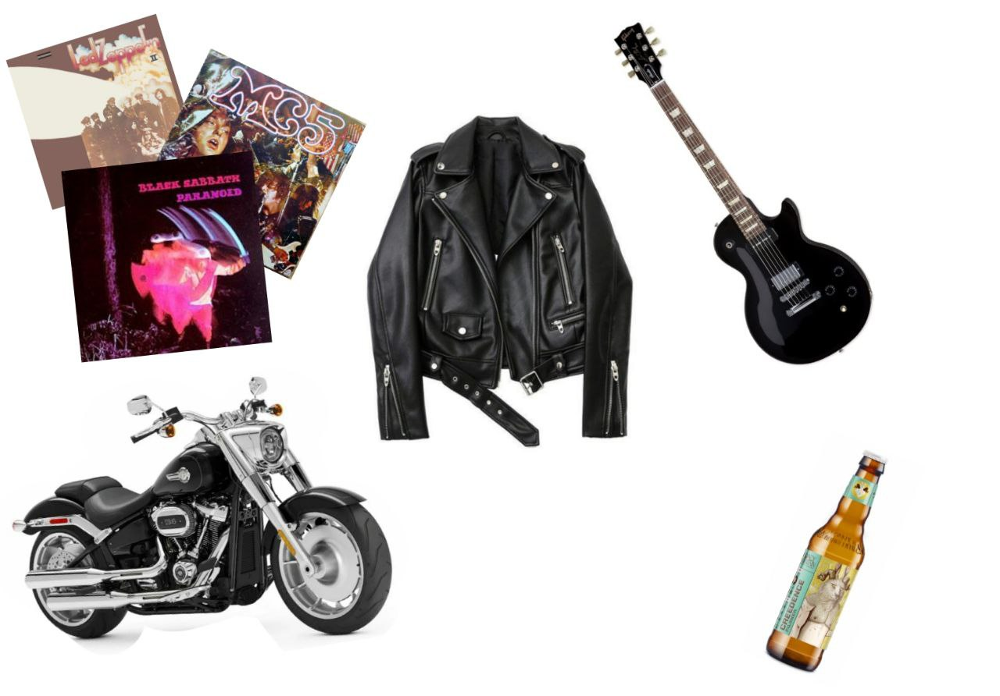

Наряду с модами, начали формироваться в начале конца 50х и начала 60х и изначально их основным интересом была не зародившаяся рок-н-ролл музыка, а мощные и брутальные мотоциклы, хотя от первого они никогда не отказывались и с течением времени рокерами начали называть просто ценителей рок-музыки.
Их интересами были многочисленные мотоклубы и посиделки в придорожных барах. Их образ уже много лет неизменен: это черные джинсы, заправленные в высокие ботинки, кожаная куртка с кривой молнией (косуха), длинные волосы, а на голове часто бандана. Конечно, говорить, что все рокеры выглядят именно так – неправильно. Есть масса вариаций одежды. Например, те, которым за 25 лет, занимаются серьезной работой, как правило, миролюбивы, хотя иногда могут похулиганить вместе с теми, кто моложе. В основном на них повлиял коллектив The Rolling Stones, ибо их звучание было более грязным и диким, чем у Битлз. В последствии кумирами рокеров стали Led Zeppelin, Black Sabbath, Deep Purple и прочие.
Обзор группы Led Zeppelin от Пушного
Сто риффов из самых культовых рок-песен